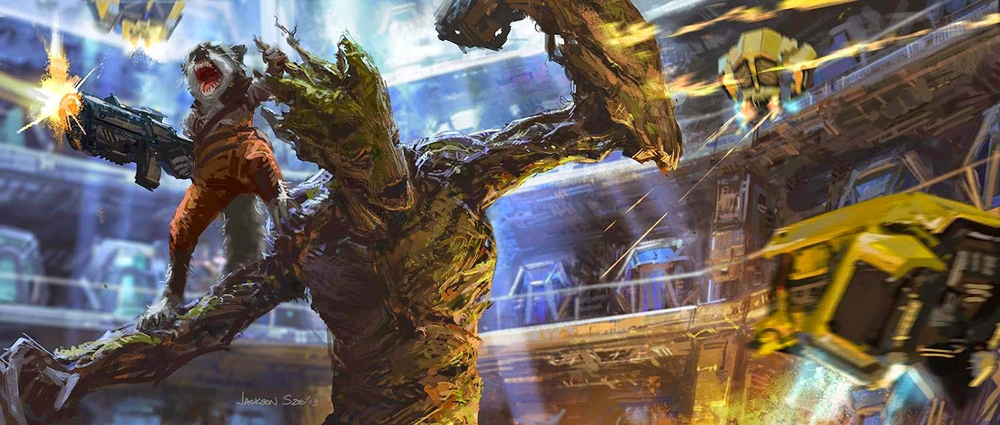

Groot

Groot adalah salah satu tokoh dalam Komik Marvel. Karater ini diciptakan oleh Stan Lee, Jack Kirby, dan Dick Ayers. Tokoh yang berbentuk monster pohon ini muncul pertama kali pada komik Tales of Astonish #13 pada November 1960. Meskipun berbentuk seperti monster, Groot merupakan salah satu pahlawan super Marvel.
Groot sendiri sebenarnya adalah alien tumbuhan yang berasal dari planet X. karena tubuh mereka terbentuk dari pohon maka mereka mengalami kesulitan dalam berkomunikasi karena kekakuan dari tenggorokan mereka. Groot sendiri cukup beruntung karena dirinya dapat berbicara meskipun hanya frasa "Aku Groot". Di Planet X, para alien tumbuhan yang cerdas mencoba untuk mengunakan mamalia kecil sebagai peliharaan mereka dengan pengetahuan cerdas yang mereka miliki. Namun Groot memiliki kepribadian berbeda, Ia tak menganggap mamalia kecil sebagai peliharaan melainkan sebagai teman.
Groot pun diasingkan dari tanah kelahirannya lantaran membunuh salah satu anak alien tumbuhan demi melindungi mamalia. Ia pun akhirnya dibuang ke "Arbor Masters". Namun Proses pengasingan tersebut membuat dirinya selamat dari pembataian yang memusnahkan seluruh penghuni Planet X sehingga saat ini hanya dirinya alien tumbuhan dari Planet X yang tersisa.
Hidup seorang diri membuatnya hidup kesepian hingga suatu saat Grrot bertemu dengan Rocket Racoon. Mereka berdua akhirnya berteman akrab dan saling menjaga hingga akhirnya mereka bertemu dengan Peter Quill dan membentuk Guardians of the Galaxy. Sebagai alien tumbuhan, untuk bertahan hidup, Groot memakan kayu. Groot memiliki kemampuan mengontrol seluruh tumbuhan yang ada di jagad raya untuk menyerang maupun untuk bertahan. Groot sendiri merupakan ras alien tumbuhan tertinggi karena dalam tubuhnya mengalir garis getah (darah) kuno yang membuat dirinya lebih cerdas dari alien tembuhan yang lain. Meskipun hanya mengatakan "Aku Groot", tapi makna kata yang ingin dikatakan oleh Groot berbeda-beda dan hanya beberapa mahluk saja yang dapat mengerti makna tersebut. Salah satunya adalah Rocket Racoon.